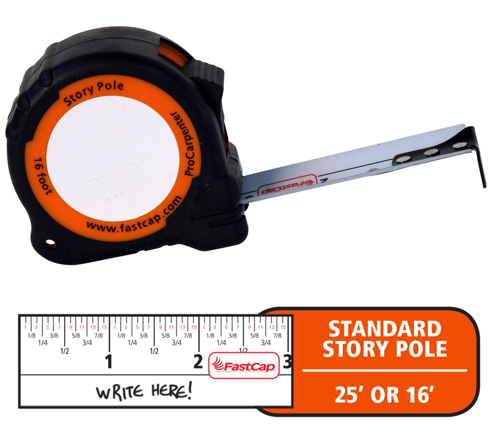

I changed the way I think about scale when my son asked how many seconds it was until the weekend. The length of one second is a tangible thing to a child, equivalent to a tick-tock sound he can make on his own. Similarly, explanations of large numbers usually worked only when they started with the small and personal — the size of his room, the distance walked every morning to school, the height of scaffolding he likes to climb.
When I trim my son’s nails, I like to hold up a sliver of baby fingernail and say, “this is how much the tectonic plates have moved since we last cut your nails,” all because I read in a decade-old article that “Continents Split Up at the Same Speed Finger Nails Grow.”1 That factoid stayed with me because the sentence connected this global phenomenon so effectively to my literal fingertip. It reminds me that nothing would be too big or small to build a relationship with, if only we had the right unit of measurement.
Measurement is “the correlation of some target to some comparator or unit.”2
Many units of measurement originate in our own bodies: hand, foot, hair, nose, thumb, finger, arm, step. In some cultures they still persist against standards. It is perhaps not only more intuitive but also logical to use our biological attributes as units. After all, part of the world we aim to measure — our built environment — grows out of the human body as its base unit.
Standardized units and systems of measurement are about human communication. While units often have to be separated from their human origins in order to function properly, a shared unit builds connection between two acts of measurement. It does not matter how different the things we measure are. By measuring them we impose the structural system that forces them into existing in the same space.
A colloquial unit both precedes and follows systems of standardized units. Older humanistic units persist today not because of their ability to resist standards, but rather due to their power to manipulate the narrative of standards. These units live where dollars, meters, miles, and the world of feet, hairs, and nails coexist.
This is a map that measures the area that is in view in football fields.
Maybe your game is baseball, or soccer instead. Maybe your base unit is a place you know really well.
Some measurements are vague on purpose. They are concepts rather than units of measurements. For example, an asteroid or an iceberg is often a Texas.
Sometimes comparisons can stick, but they remain trivia, and may not bring us any closer to the object of comparison.
We have a large capacity to keep adding context by incorporating the unprecedented amount of data at our fingertips. We can connect them in a million ways in an attempt to generate a single meaningful connection. We can keep generating context until one clicks and becomes part of our experience.
Sometimes comparisons take you further rather than closer to the objects you are comparing. When expanding and going outwards fail, another way is to reset and start from the small again. There are analog tools that people use to measure and record. For example, this tape measure is used by carpenters to write notes to themselves of what they have measured.

The same tape measure is also used by parents as a consistent and portable tool to track a child’s growing height. When my son stands at the top of the slide, it is the highest point he can get to in the park, and he is just a little taller than the adult male giraffe James Michael, one of the tallest giraffes currently living in the Bronx zoo.
When we walk to school, it is 3 city blocks that take about 600 steps, and anywhere between 6 and 30 minutes depending on the day.
If we do it every day, where will we end up at the end of the year?
Measure a stair. If it is 8 inches tall, then it would be 9,139 steps down to the deepest part of the Grand Canyon, or 18,120 to the bottom of the ocean.
And grow it in scale or shrink it down to size.
Yet all these analogies and translations did not prepare me for when, one afternoon last spring, my son asked me about the size of an atom. It is too small, and I never knew how small. I can say there are a million atoms across a strand of hair, but it doesn’t mean a lot, not even to me. So we started with what we knew how to connect with, a second and a step.
If an atom was a dollar, then a grain of sand would be all the money in the world × 35,000.
If an atom is a person, then the population of the world would fit in a grain of sand a million times.
If $1 was a hair, then the average American's wealth would be about 2 heads of hair, and Elon Musk's would be every head of hair in Hungary.
If each second is $100, then the average American's net worth is a newborn baby 36 minutes old, and Jeff Bezos's is the oldest person alive in the world, 117 years old.
These are absurd comparisons. But the problem here is not the atom. It is the vast discrepancies that exist in supposedly human scaled numbers. We face increasingly large numbers when we read about extreme wealth, rising temperatures, the scope of casual surveillance, and the size of a natural language model's corpora. When we measure something, it is with the implicit understanding that a thing has value and can be measured. When we try to explain the absurd, we might accidentally become complicit in its justification by placing it in the same realm as the tactile and everyday. Connecting with large numbers is about finding the right units, but it is also an exercise in accepting that some numbers defy explanation, and that is its measure.
End